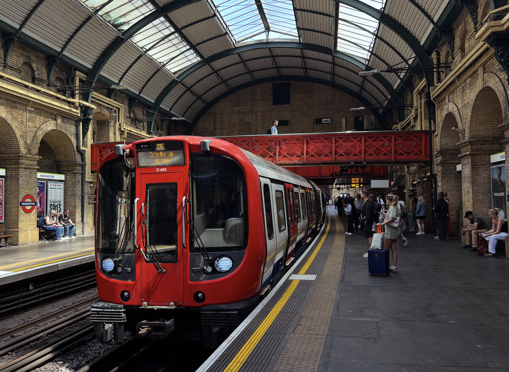

Underground Train in London
Taken in 2025

This photo was taken at Padington Station in 2025.
This is a fun photo I think it shows how old and historic the underground system is.
Yet with a modern train in it shows how they still are able to modernizea historic system.